<div class="">
    <div class="portlet box green ">
        <div class="portlet-title">
            <div class="caption">
                 Create new shipment with autostart shipment template
            </div>
            <div class="tools hidden-print">
                <button class="btn default btn-sm uppercase" type="button" ng-click="Print()">
                    <i class="fa fa-print"></i>
                    <span>Print</span>
                </button>
            </div>
        </div>
        <div class="portlet-body">
            <div class="container-fluid">
                <div class="row">
                    <div class="col-sm-6 col-sm-offset-3">
                        <span>Autostart Shipment are based on Autostart Templates, which are assigned to each device in
                            <a href="#/tracker">Trackers</a>
                        page.</span>
                    </div>
                </div>
                <div class="row">
                    <div class="col-sm-6 col-sm-offset-3">
                        <span>Two ways to create an Autostart Shipment:</span>
                    </div>
                </div>
                <div class="row">
                    <div class="col-sm-6 col-sm-offset-3">
                        <span>1. Switch on a device</span>
                    </div>
                </div>
                <div class="row"><div class="col-sm-6 col-sm-offset-3">OR</div></div>
                <div class="row">
                    <div class="col-sm-6 col-sm-offset-3">
                        <span>2. Choose a device below and hit CREATE AUTOSTART SHIPMENT</span>
                    </div>
                </div>
                <form role="form" name="frmAddNewShipment" id="frmAddNewShipment" novalidate class="form-horizontal">
                    <div class="form-body">
                        <div class="form-group">
                            <div class="col-md-6 col-sm-offset-3">
                                <label class="control-label">
                                    <span>Tracker</span>
                                    <i uib-tooltip="Choose a device from the list below to create an autostart shipment"
                                       tooltip-append-to-body="true"
                                       tooltip-trigger="mouseenter"
                                       tooltip-placement="top"
                                       class="fa fa-info-circle"></i>
                                </label>
                                <ui-select ng-model="VM.tracker"
                                           theme="bootstrap"
                                           style="width: 100%"
                                           title="Choose a tracker">
                                    <ui-select-match placeholder="-- Please Select --">{{$select.selected.name}}</ui-select-match>
                                    <ui-select-choices repeat="tker in VM.trackers track by $index"
                                                       refresh="refreshAddresses($select.search)"
                                                       refresh-delay="0">
                                        <div ng-bind-html="tker.name | highlight: $select.search"></div>
                                        <small>
                                            Imei:{{tker.imei}}
                                            AutoStart Template:{{tker.autostartTemplateName}}
                                        </small>
                                    </ui-select-choices>
                                </ui-select>
                                <small ng-if="VM.tracker">
                                    <span ng-if="VM.tracker.autostartTemplateId">Using this AutoStart Template: {{VM.tracker.autostartTemplateName}}</span>
                                    <span ng-if="!VM.tracker.autostartTemplateId" class="text-danger">This tracker has no assigned AutoStart Template</span>
                                </small>
                                <small ng-if="!VM.tracker">
                                    <span>Choose a tracker to create an autostart shipment</span>
                                </small>
                            </div>
                        </div>

                    </div>
                </form>
            </div>
            <div class="form-actions text-center ab">
                <button class="btn green" form="frmAddNewShipment" ng-click="VM.createNewAutoStartShipment(frmAddNewShipment.$valid)" type="submit">Create AutoStart Shipment</button>
                <button class="btn default" type="button" ng-click="VM.ResetForm()">Reset</button>
            </div>
        </div>
    </div>
</div>